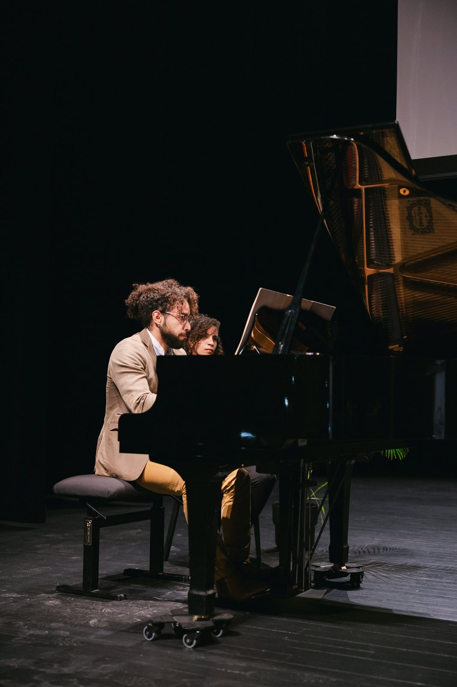
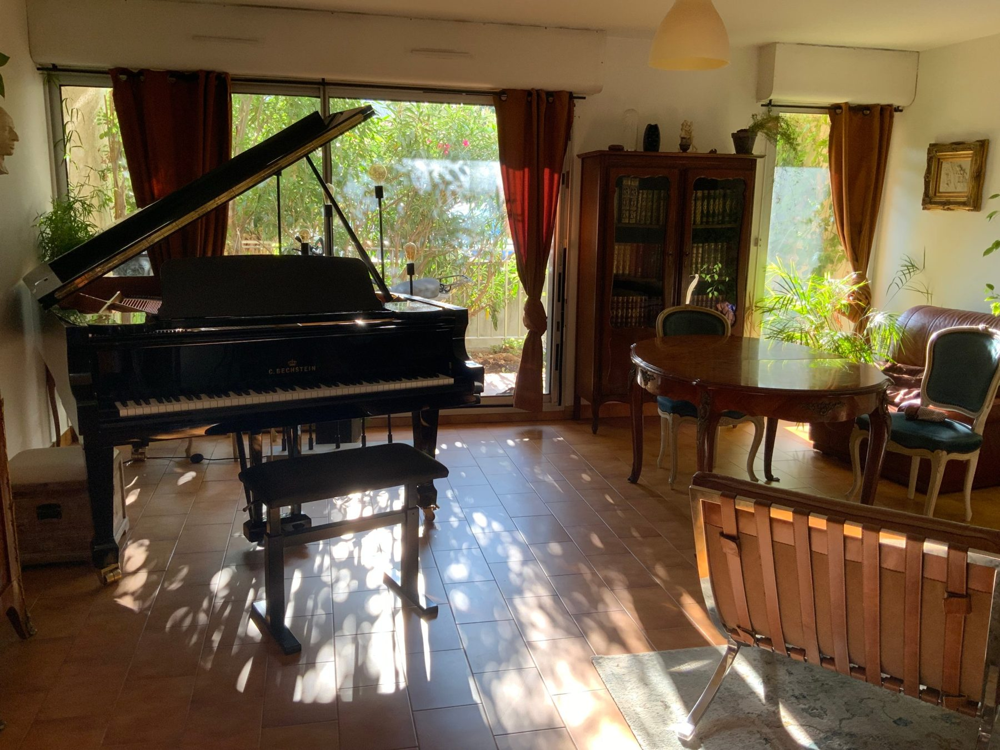
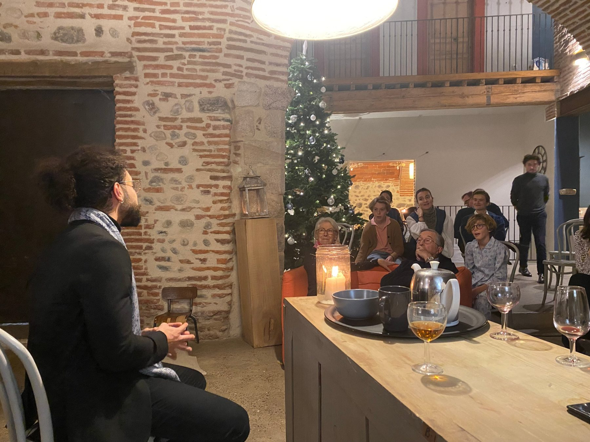
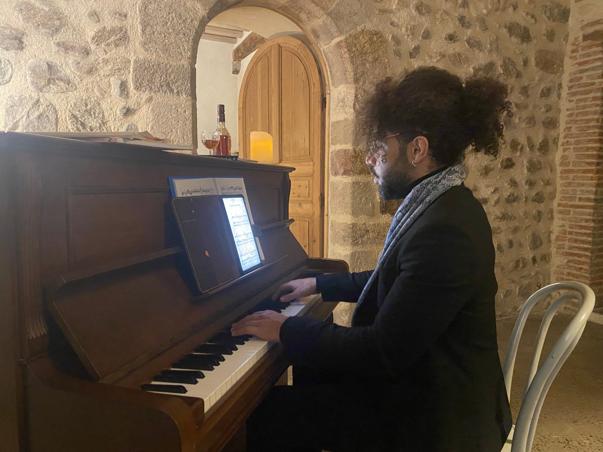

Cours de piano
Tous âges, tous niveaux, tous répertoires. En individuel ou en petit groupe, à Port Marianne ou à domicile.
Découvrir les cours →Salons musicaux, cours de piano & lectures – Montpellier

Entrez, installez-vous. Ici, la musique se vit de près : on l’écoute, on la comprend, on la partage.
Pianiste et musicologue, Charles Cabral accueille à Montpellier élèves et mélomanes autour d’un piano de concert : pour apprendre, pour écouter, ou simplement pour passer une belle soirée en musique.
Quand on n’a pas le moyen de se payer des voyages, il faut y suppléer par l’imagination. Claude Debussy

Tous âges, tous niveaux, tous répertoires. En individuel ou en petit groupe, à Port Marianne ou à domicile.
Découvrir les cours →
Des concerts dînatoires intimes : un programme commenté au piano, puis la soirée se prolonge autour d’un repas cuisiné maison.
Être prévenu des prochains salons →
Poèmes et textes lus à voix haute, accompagnés au piano. À découvrir : Un renard sous les étoiles.
Écouter les lectures →Des poèmes et des textes lus à voix haute, portés par le piano.
Chopin – Nocturne op. 9 n° 1
Debussy – Reflets dans l’eau (Images, 1er livre)
Debussy – Ballade
Les prochains salons seront bientôt annoncés ici.
Écrivez-moi pour recevoir l’invitation : lesamisdemonsieurcroche@gmail.com